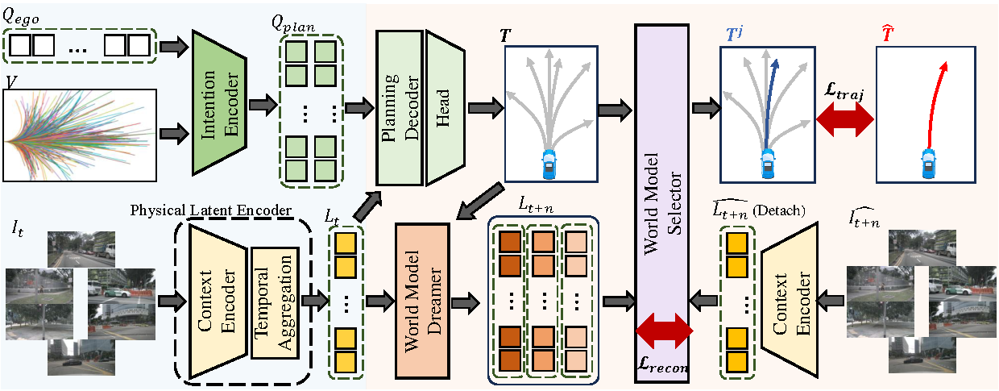
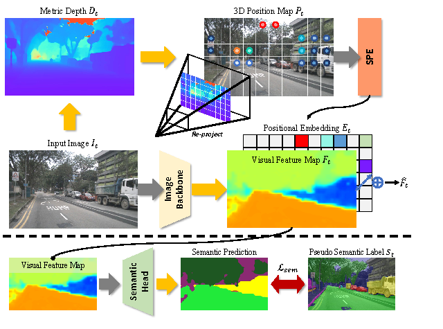
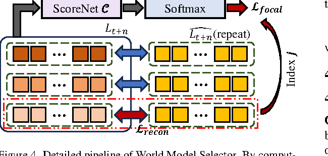
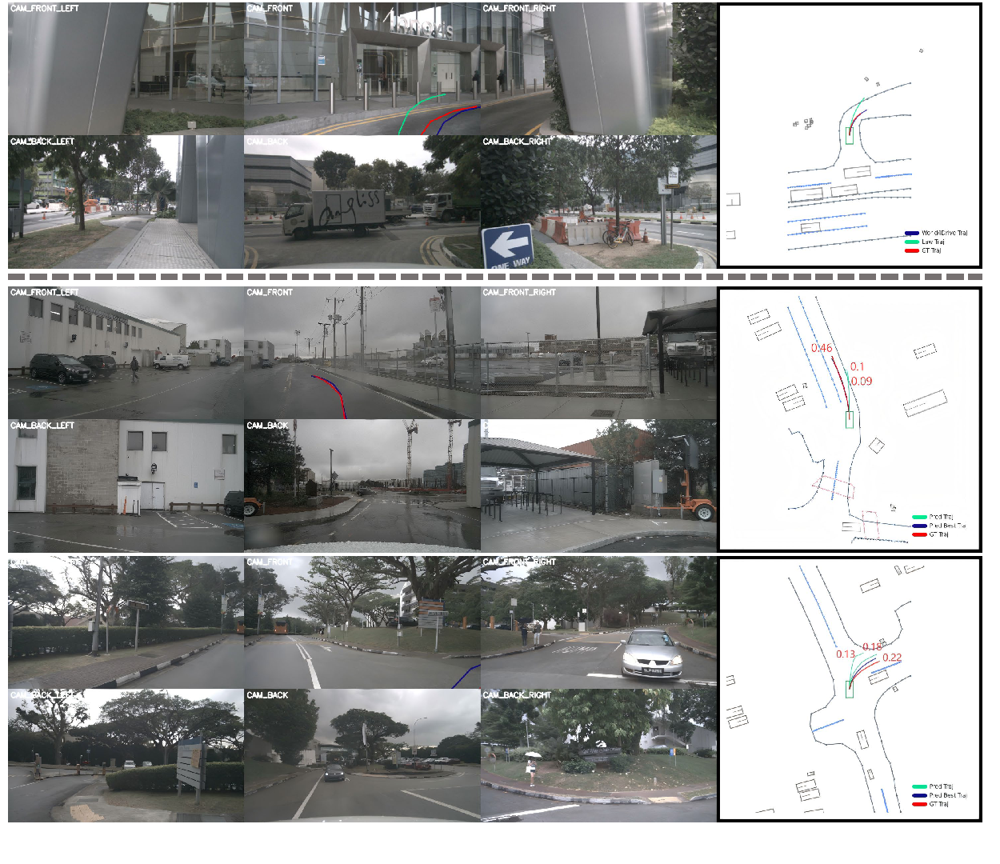

一句话总结
World4Drive 用视觉基础模型构造带空间、语义、时序信息的 physical latent world， 再让这个 world model 针对多种驾驶意图预测未来 latent，并作为轨迹选择器来评估哪条规划更合理。
论文要解决的问题
端到端自动驾驶如果依赖 BEV、3D box、HD map 或 occupancy supervision，通常需要昂贵的人工感知标注。 近年的 latent world model 尝试通过自监督学习摆脱这些标注，但已有方法常把当前图像压成单一 latent， 再预测一个未来 latent。这种单一未来表示很难同时处理物理空间语义和驾驶意图的不确定性。
- 标注成本：很多 E2E-AD 方法效果依赖 perception annotations，训练成本和数据构建成本都高。
- latent 表示太薄：只从 raw image 学 latent，容易缺少深度、语义、可行驶区域等 planning 需要的物理信息。
- 未来是多模态的：同一场景下左转、直行、绕行、等待会对应不同未来，单一 world latent 容易把这些可能压扁。
- 世界模型没有真正参与选择：很多方法用 world model 做辅助训练，但没有让它直接评估多条候选轨迹。

创新点怎么理解
这篇的关键不只是“又做了一个 world model”。它真正有意思的地方是： world model 不只预测未来，还参与多意图规划的评估和选择。
Intention-aware latent world model
相比 LAW 这类单一未来 latent 预测，World4Drive 把驾驶意图显式接入 world model。 每一种 intention 都对应一个未来 latent world，让模型学习“不同行为会导致不同未来”。
World Model Selector
训练时比较预测 future latent 和真实 future latent 的距离，选出最合理的模态； 推理时由 ScoreNet 给候选轨迹打分。这样 world model 直接参与 planning decision。
Physical latent encoding
用 Metric3D 这类深度模型提供 3D 空间 prior，用 Grounded-SAM 提供伪语义 prior， 再聚合历史帧，让 latent world 同时包含空间、语义和时序信息。
Annotation-free but not prior-free
它不使用目标数据集里的人工 perception annotations，但借助视觉基础模型提供伪深度和伪语义。 这个设计降低了标注成本，也解释了为什么它比纯 raw image latent 更稳。
LVDrive 更像是用 future latent 增强 VLA planning representation； World4Drive 更像是让 latent world model 对多条候选轨迹做“后果想象”和“合理性评分”。
核心方法总览
多视角 RGB 图像 + 轨迹词表
↓
Driving World Encoding
├─ Intention Encoder: 从 trajectory vocabulary 提取多模态驾驶意图
└─ Physical Latent Encoder: 融合图像、深度、语义、历史上下文
↓
Intention-aware World Model Dreamer
├─ 生成 K 条候选轨迹
└─ 针对 K 种意图预测 K 个 future world latents
↓
World Model Selector
├─ 训练时与真实未来 latent 对齐
└─ 推理时选最高分轨迹3.2 Driving World Encoding
Intention Encoder
论文先准备一个 trajectory vocabulary V ∈ R^{N×S×2}，其中 N 是轨迹数量，
S 是每条轨迹的 waypoint 数。作者对轨迹终点做 k-means，得到三种 command
左转、右转、直行下的 intention points P_I ∈ R^{3×K×2}。默认设置中
N=8192，每种 command 下 K=6 个 intention。
Q_plan = SelfAttention(Q_ego + Q_I)这个设计的直觉是：不要让模型从零开始猜“可以怎么开”，而是先把候选驾驶意图编码成 query， 后续 world model 再判断这些意图会导致什么未来。
Physical World Latent Encoding

Physical World Latent Encoder 是这篇相对 LAW 的另一个关键改造。LAW 直接从 camera feature 抽 latent， 而 World4Drive 给 latent 加入三类物理上下文：
- 3D 空间 prior：用 metric depth model 估计深度，再反投影得到每个像素在 ego 坐标系下的 3D position map。
- 语义 prior：用 Grounded-SAM 产生高置信度伪 semantic mask，并用
L_sem强化语义理解。 - 时序 prior：保留上一时刻 visual feature，通过 cross-attention 聚合历史信息。
S_t = GroundedSAM(F_t)
E_t = MLP(SPE(P_t))
L_t = CrossAttention(F̂_t, F̂_{t-1})所以这里的 latent 不是普通图像压缩特征，而是一个被深度、语义、历史上下文塑形过的 physical world latent。
3.3 Intention-aware World Model Dreamer
得到 Q_plan 和当前 world latent L_t 后，模型先生成 K 条多模态轨迹：
T = MLP(CrossAttention(Q_plan, L_t))
然后用 action encoder 把这些 intention-aware trajectories 编成 action tokens A ∈ R^{K×D}。
接着把 action tokens 和当前 world latent 拼接，预测每个 intention 对应的未来 world latent：
L_{t+n} = CrossAttention(Q_future, Concat(A, L_t))这一步是文章的灵魂：模型不是预测一个未来，而是预测“如果选择每个候选意图，未来世界会怎样”。 这让 planning 从单纯模仿专家轨迹，变成带有一点 counterfactual flavor 的后果评估。
World Model Selector

训练阶段，模型可以看到真实未来帧，因此能通过同一个 context encoder 得到真实未来 latent。 对 K 个预测 future latents 分别计算与真实 future latent 的 MSE 距离，距离最小的模态被视为最合理的意图。 对应的轨迹被选为最终规划轨迹，同时这个最小距离作为 reconstruction loss。
另一方面，ScoreNet 学习预测哪个模态应该被选中。推理时没有真实未来帧，所以直接用 ScoreNet 的最高分选择轨迹。
多模态轨迹本身不等于好规划。没有评价机制时，候选越多也可能越乱。 World4Drive 的 selector 让 world model 变成 trajectory evaluator，而不是只做辅助 representation learning。
训练目标
World4Drive 是端到端训练的，总 loss 包含语义、未来 latent 对齐、selector 分类和轨迹监督：
L = α L_sem + β L_recon + γ L_score + η L_traj
α = 0.2, β = 0.2, γ = 0.5, η = 1.0L_sem：来自 Grounded-SAM 伪语义标签，增强 latent 的语义理解。L_recon：预测 future latent 与真实 future latent 的距离，对齐世界模型想象和真实未来。L_score：用 focal loss 训练 ScoreNet 选择正确模态。L_traj：最终选中轨迹和专家轨迹之间的 L1 规划损失。
实验结论
nuScenes open-loop
| Method | Avg L2 ↓ | Avg Collision Rate ↓ | 是否需要人工感知标注 |
|---|---|---|---|
| VAD | 0.72 | 0.23 | 需要 |
| GenAD | 0.52 | 0.19 | 需要 |
| LAW perception-based | 0.49 | 0.19 | 需要 |
| LAW perception-free | 0.61 | 0.30 | 不需要 |
| World4Drive | 0.50 | 0.16 | 不需要 |
相比 perception-free LAW，World4Drive 的平均 L2 从 0.61 降到 0.50， 平均碰撞率从 0.30% 降到 0.16%。论文强调它在不使用人工感知标注的设置下达到 SOTA， 且 collision rate 在表中最低。
NavSim closed-loop
| Method | Input | NC ↑ | DAC ↑ | TTC ↑ | EP ↑ | PDMS ↑ |
|---|---|---|---|---|---|---|
| UniAD | C | 97.8 | 91.9 | 92.9 | 78.8 | 83.4 |
| LAW perception-free | C | 97.2 | 93.3 | 91.9 | 78.8 | 83.8 |
| DiffusionDrive | C&L | 98.2 | 96.2 | 94.7 | 82.2 | 88.1 |
| World4Drive | C | 97.4 | 94.3 | 92.8 | 79.9 | 85.1 |
World4Drive 在 camera-only 设置下超过 LAW 和 UniAD，但没有超过使用 camera + LiDAR 的 DiffusionDrive。 这说明它的 closed-loop 改进是明确的，但“SOTA”需要限定在 perception annotation-free / camera-only 等设定内理解。
消融实验怎么读
| 设置 | Depth | Semantic | World Model | Intentions | L2 ↓ | Collision ↓ |
|---|---|---|---|---|---|---|
| LAW baseline | - | - | ✓ | - | 0.61 | 0.30 |
| + Intentions | - | - | ✓ | ✓ | 0.55 | 0.25 |
| + Depth | ✓ | - | ✓ | ✓ | 0.51 | 0.29 |
| Depth + Semantic + WM | ✓ | ✓ | ✓ | - | 0.49 | 0.26 |
| Depth + Semantic + Intentions only | ✓ | ✓ | - | ✓ | 0.61 | 0.36 |
| Full World4Drive | ✓ | ✓ | ✓ | ✓ | 0.50 | 0.16 |
这个表最值得注意的是最后两行：只有 intentions 但没有 world model，碰撞率反而变差； 加上 world model selector 后，collision 从 0.36 降到 0.16。这支撑了作者的核心 claim： 多意图本身不是答案，必须有 world model 来评价和筛选。
复杂条件下的表现
| Condition | World4Drive L2 ↓ | World4Drive Collision ↓ | LAW L2 ↓ | LAW Collision ↓ |
|---|---|---|---|---|
| All | 0.50 | 0.16 | 0.61 | 0.30 |
| Day | 0.47 | 0.16 | 0.56 | 0.26 |
| Night | 0.76 | 0.08 | 0.67 | 0.22 |
| Sunny | 0.50 | 0.18 | 0.58 | 0.29 |
| Rainy | 0.49 | 0.05 | 0.54 | 0.16 |
夜晚条件下 World4Drive 的 L2 比 LAW 更高，但 collision 更低。这提示我们： 它可能不是每个场景都更贴近专家轨迹，但更倾向输出安全轨迹。

局限与疑问
- 不是完全 prior-free：虽然不用人工 perception annotations，但依赖 Metric3D、Grounded-SAM 等预训练模型。
- selector 的泛化仍需验证：训练时用真实未来 latent 选模态，推理时靠 ScoreNet，二者之间可能存在分布差异。
- trajectory vocabulary 有约束：k-means intention 来自预定义轨迹词表，复杂交互场景下可能限制行为空间。
- open-loop 指标有限：nuScenes 的 L2 和 collision rate 不能完全代表真实闭环驾驶能力。
- 视觉基础模型成本：伪深度和伪语义虽省人工标注，但工程上仍需要额外模型、推理和清洗流程。
对我们做 AD + World Model 的启发
World4Drive 给普通组的启发很实际：不一定要训练超大的 VLA 或生成未来视频， 可以先做一个轻量的 latent world model，让它服务于候选轨迹评分。
- 先把 world model 定义成 planning evaluator，而不是 video generator。
- 用现成 depth / segmentation foundation model 做伪监督，降低人工标注依赖。
- 多模态轨迹必须配套 selection / scoring，否则候选越多不一定越安全。
- 可以从小实验开始：固定 backbone，比较 raw latent、depth-aware latent、semantic-aware latent 对轨迹评分的影响。
World4Drive uses an intention-aware latent world model not only to predict future scene representations, but also to evaluate and rank multi-modal planning trajectories under different driving intentions.